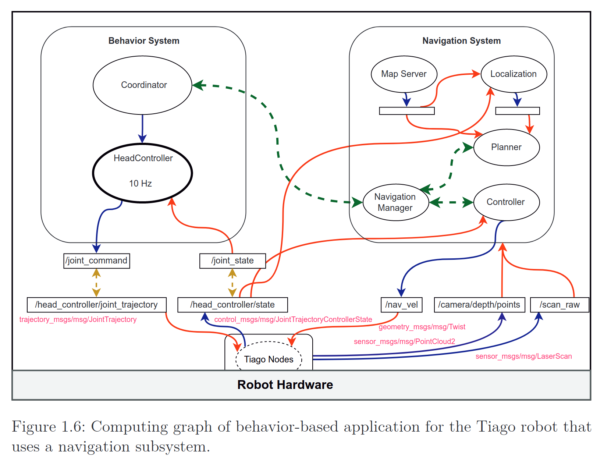
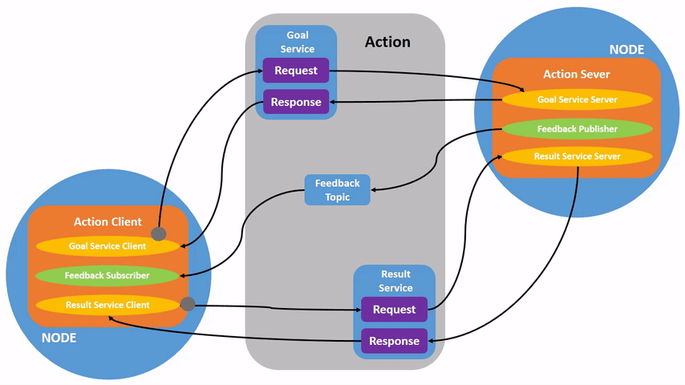

Robot programming in ROS 2
Advanced Topics in Robotics
![]()
December 9, 2025
Introduction
Agenda
Today’s 4-Hour Plan
- Introduction (30 min): My background, your background, set-up for the session.
- First steps with ROS 2 (25 min): Explain core ROS 2 concepts: nodes, topics, messages, services, … + basic CLI tools.
- Break (10 min)
- Live Demo (30 min): Write a simple Pub/Sub node.
- FastAPI vs ROS 2 (30 min): Experiment with the ROS 2 example node.
- Break (10 min)
- Hands-on Project (90 min): Build integration & debug.
- Wrap-up & Feedback (10 min)
About Me
Alejandro Lorite Mora
- PhD Researcher in Robotics
- Affiliations: REAL Lab (ITU) · Helix Lab · Novo Nordisk
- Focus: Multi-robot collaboration (ground + aerial) for industrial inspection & maintenance
- Email: lori@itu.com
PhD Project Overview
Core Goal: Automate inspection & maintenance in complex industrial facilities still done manually.
Robot Team: Heterogeneous collaboration between a quadruped (with manipulator arm) and an aerial drone using ROS 2.

About You
Intended Learning Outcomes
By the end of the session you will be able to:
- ILO 1: Identify and briefly explain core ROS 2 concepts: nodes, topics, messages, services.
- ILO 2: Use essential ROS 2 CLI commands: list, info, run, pub, echo.
- ILO 3: Implement and run a minimal Python publisher/subscriber node.
- ILO 4: Replace a FastAPI-based interaction with an equivalent ROS 2 node: communication via topics, actions, and services.
What We Will NOT Cover
- Launch files
- Building C++ nodes
- Advanced ROS 2 concepts (parameters, lifecycle, composition, etc.)
- Simulation with Gazebo or other tools
- Integration with mobile robots or manipulators
- Integration with perception libraries (e.g., OpenCV, PCL)
- Multi-robot systems
- …
First Steps With ROS
Agenda
A Bit of History
- Founded in 2007 by Willow Garage at the Stanford Artificial Intelligence Lab.
- Since 2013 managed by OSRF (Open Source Robotics Foundation).
- ROS 2 started in 2014 to address limitations of ROS 1.
- Current ROS 2 release: Jazzy Jalisco (May 2024), supported until May 2029.
- We will use: Humble Hawksbill (May 2022), supported until May 2027.
- ROS 2 built on DDS (Data Distribution Service) for real-time, reliable communication.
- Find out more in the Red Hat - How to Start a Robot Revolution series.
What is ROS / ROS 2?
- ROS stands for Robot Operating System.
- It is not a computer operating system, but a middleware or a Meta Operating System that increases the system’s capabilities for robotic applications.
- ROS 2 is the second generation of this middleware.
- ROS is fundamentally an open-source software released under licenses like Apache 2 and BSD.
- ROS provides standardized communication protocols, libraries, and tools to facilitate robot software development.
- The fundamental difference distinguishing ROS from other middlewares is its vast developers community around the world.
Why ROS?
- Open Source: Active community, still evolving and improving.
- Development Tools: Debugging tools, 2D & 3D visualization tools, logging tools, simulation tools.
- Modularity: Build complex systems from smaller, reusable components.
- Hardware Abstraction: Works with various hardware platforms and sensors.
- Scalability: From small robots to large multi-robot systems.
Three Dimensions of ROS 2
ROS 2 is approached from three different but complementary dimensions:
- The Community: A fundamental element where developers contribute applications and utilities through public repositories.
- The Computation Graph: A representation of the running ROS 2 application, composed of nodes and arcs.
- The Workspace: The static set of software installed on the computer/robot, including development tools and the build system (Colcon).
The Computation Graph

Ubuntu Terminal Basics
If many are new to Ubuntu:
ROS 2 Core Concepts
Turtlesim & rqt
- Let’s follow along with a live demo of
turtlesimandrqt. - Feel free to find the tutorial online here.

Nodes and Execution
- Let’s see the nodes in action using the turtlesim example again.


Publication/Subscription (Topics)
- Publisher: The node that sends messages to a topic.
- Subscriber: The node that receives messages from a topic.
- Topics: The name of a data stream (e.g.,
/camera_image). - Messages: The actual data. A specific, defined format (e.g.,
String,Image).

Services (Request/Response)
- Service Server: The node that offers a service.
- Service Client: The node that calls the service.
- Service: A named request/reply interaction (e.g.,
/spawn_turtle). - Request/Response: The data sent to and received from the service.

Actions (Long-running)
What if completion takes time?
- Action Server: The node that performs the action.
- Action Client: The node that requests the action.
- Action: A named long-running request/feedback/reply interaction (e.g.,
/turtle1/rotate_absolute). - Goal/Feedback/Result: The data sent to, received during, and returned from the action.

Live Demo: Simple Pub/Sub Node
Agenda
- Let’s follow along with a live demo of a simple Pub/Sub node.
- Feel free to find the tutorial online here.
Create a ROS 2 Package
source /opt/ros/humble/setup.bash
mkdir -p ros2_ws/src
cd ros2_ws/src
ros2 pkg create --build-type ament_python --node-name my_node itu_pubsub_exampleBuild the Package
cd ros2_ws
rosdep install -i --from-path src --rosdistro humble -y
colcon build --symlink-install
source install/setup.bashRun the Node
Publisher (Talker)
self.publisher_ = self.create_publisher(String, 'my_topic', 10)
msg = String()
msg.data = "Hello"
self.publisher_.publish(msg)Subscriber (Listener)
self.subscription = self.create_subscription(
String, 'my_topic', self.listener_callback, 10)
def listener_callback(self, msg):
self.get_logger().info(f'I heard: "{msg.data}"')Run the Nodes
Service Server
self.srv = self.create_service(SetPen, 'set_pen', self.set_pen_callback)
def set_pen_callback(self, request, response):
self.get_logger().info(f'Setting pen: {request.r}, {request.g}, {request.b}, {request.width}, {request.off}')
response.success = True
return responseService Client
client = self.create_client(SetPen, 'set_pen')
while not client.wait_for_service(timeout_sec=1.0):
self.get_logger().info('Service not available, waiting again...')
request = SetPen.Request()
request.r = 255
request.g = 0
request.b = 0
request.width = 5
request.off = 0
future = client.call_async(request)FastAPI vs ROS 2
Agenda
Package Snapshot
lab_automation_pump exposes:
- Action:
pump/step(PumpStep.action) for timed operations - Topic:
pump/state(PumpState.msg) publishing current pump A state - Cancellation = emergency stop
Run (simulation)
colcon build --packages-select lab_automation_pump
source install/setup.bash
ros2 launch lab_automation_pump pump.launch.py simulated:=trueSend a goal
ros2 action send_goal /pump/step lab_automation_pump_interfaces/action/PumpStep "{state: true, speed: 2000, dir: true, duration_ms: 3000}"Cancel
Echo state
Action Anatomy
Why an Action?
- Long‑running (timed) pump operations
- Feedback for UI / CLI progress
- Cancel for emergency stop
PumpStep.action (conceptual):
Topic State
State message (simplified):
Publishing rate parameter: state_publish_rate_hz (default 2.0).
Use it for dashboards & health monitoring (low frequency).
Simulation vs Hardware
Parameter controls:
simulated: mock driver when truedevice_id: serial identifier or auto-detectfeedback_rate_hz: action feedback granularity
Design implication: Keep abstraction boundary so REST layer does not depend on simulated/hardware choice.
Hands-on Project
Agenda
Proposed Exercises
- Launch multiple nodes to control multiple pumps.
- Create a new node to publish information about the color sensor.
- Create a logic node that orchestrates when to use the pumps and how.
- The logic is about opening the different pumps to mix the colors from each one and obtain the desired color.
- For example, you could have pumps with primary colors (Red, Yellow, Blue) and mix them to create secondary colors (Green, Orange, Purple).
- The color sensor would be used to verify the resulting color of the mix.
Time to Work on Your Projects
Feel free to use ROS 2 or FastAPI for your integration.
References:
Wrap-up & Feedback
Agenda
Revisiting The Computation Graph
Feedback
Thank You / Tak for i dag / Gracias
Remember that we have only explored the basics of ROS 2 today. There is a vast ecosystem and many advanced features to discover.
Feel free to reach out if you have any questions or need further assistance with ROS 2 or your projects!
Alejandro Lorite Mora

December 9, 2025 Robot programming in ROS 2